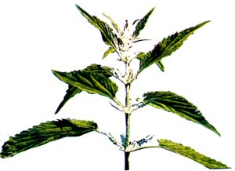

This wild potherb is so tasty and so nutritious that it's had to arm itself in order to survive!
My first impression of the stinging nettle (Urtica dioica) was, I admit, not altogether positive. It happened when Michele and I were walking through the coastal British Columbia woods one spring, and - upon brushing my way through a thicket - I felt an unfamiliar itching, burning sensation on both hands. In the course of getting out of that patch of greenery, I was able to determine which particular group of plants was responsible for my discomfort. And when we arrived back at our home (by which time the stinging sensation was long gone), we dug out our trusty reference books and soon, in a wildfoods field guide, identified my prickery assailant as a nettle.
I was surprised to learn that the herb is edible ... and further, that the leaves are credited with being rich in iron, calcium, protein, vitamins A and C, chlorophyll, and mineral salts. However, despite the fact that the leafy plant sounded like some sort of super-food, my memory of those tiny, stinging hairs was still vivid enough to make me skeptical about eating the herb.
Michele didn't share my reservations, though (after all, she hadn't been stung!), and some nights later I found an unfamiliar cooked green on my dinner plate. The leaves were a rich, dark emerald color . . . and--upon taking a somewhat hesitant taste - I found them to be succulent, with a spinach like flavor ... and (since I had my suspicions) I was surprised to note that there was no "sting" to the cooked leaves at all. "Nettles?" I asked. "Yep!" she answered.
We went on to forage the potherb often that spring ... always being sure to wear longsleeved shirts, long pants, and gloves. And over the course of that and a number of the nettle seasons that followed, we've learned a good bit about how to find and use the stinging beauties. We'd like to share what we've discovered ... and perhaps introduce other folks to one of the most versatile wild foods anywhere.
The stinging nettle is only one among the edible members of the Urticaceae family. And while it is the plant shown in the accompanying photo, its relatives - including the wood nettle (Laportea canadensis) and the slender nettle (Urtica gracilis)- resemble it in both appearance and usefulness. It favors light, reasonably rich soils on waste ground and along roadsides, and grows from Canada south to Illinois and Virginia. (The wood nettle - which frequents forests and stream banks - has a much wider range, covering eastern North America from upper Canada south to Florida ... while still other species can be found on the western half of the continent.) The simplest way to identify the stinging nettle is simply to touch the foliage. The resulting sting, if you have indeed discovered a patch of nettles, is mildly irritating but short-lived (and nature provides an antidote in the form of the juice from a crushed stem of jewelweed - genus Impatiens-which, conveniently, often grows in the same habitat as do nettles).
This potherb, like most wild greens, is at its best in the spring ... and will often toughen and/or become bitter after its flower clusters appear. As the plants mature, you'll find that the pale green top leaves will have better flavor and texture than will the large, dark foliage lower on the stalk. Furthermore, many nettle patches will put out new tender shoots in the late fall, often maintaining them until well after the first frost.
Although nettles can be used in about any recipe calling for spin ach, kale, or other "tame" greens, my wife and I prefer them steamed and served with lemon juice and olive oil.
To prepare this simple dish, bring the water in a stainless steel or enamel pot to a full boil ... add the raw nettle leaves in a stainless steel or bamboo steamer (don't pack them so tightly that the steam can't circulate among them) ... cover the pan ... and steam the greenery for 15 to 20 minutes. Don't cook the delectable potherbs so long that they lose their bright hue and turn brown and mushy. And do be sure to save the nutrient-rich water from the bottom of the pot to use in bread dough, soup stock, and the like.
While a hefty serving of steamed spring nettles can be an excellent way to beat the "long winter, no fresh vegetables" blues, this unusual herb has more than mere culinary value. In fact, though most edible wild plants have a goodly number of uses, the members of this particular family can serve as veritable vegetable department stores!
For one thing (as was pointed out in "Making Natural Cordage", on page 38 of MOTHER NO. 79), nettles are one of the most useful sources of fiber for making string or rope in a wilderness survival situation. In fact, the Scots used to spin nettle fibers (the long "threads" that run the length of the stem) and weave a fabric that was said to be more durable than linen. More recently, the plants were cultivated in Germany during the Second World War, and their sturdy fibers were used to make military clothing.
Nettles are also good sources of natural dyes. The roots will yield a yellow hue, while the fresh leaves produce (as you'd expect) a bright green dye. [EDITOR'SNOTE. For more on natural dyeing, check out the articles on pages 131 and 181 of this issue.]
Livestock animals can benefit from a nettle-supplemented diet, too. In fact, the plants can be simply hung upside down in a dry, shady location to dehydrate, and will then serve as healthful fodder all winter long. (The same drying technique can be used to preserve nettles for many other uses, as well.)
And should your Urtica - fed cow produce more milk than your family can use fresh, you can call upon nettles once again when turning that dairy product into cheese or junket. By stirring one quart of salt into a strong three-pint infusion of nettle leaves, you'll produce a very workable rennet that you can use to curdle the milk!
Wholistic gardeners have their own lists of reasons to keep some nettles around (for information on growing the herb, see the sidebar accompanying this article). The plant is known to be a good companion for tomatoes and is said to improve the soil in which it's grown ... while a tea made of nettle leaves is a trusted nontoxic spray with which to control aphids.
The versatility of Urtica dioica is most apparent when one looks at the medicinal properties that have - over the centuries - been claimed for the plant. just a partial list of the pharmaceutical chores to which it's been put could include its use as a blood purifier . . . an astringent ... a stimulant ... an antiasthmatic ... a diuretic ... a styptic ... and an antidote for hemlock, henbane, and nightshade poisoning. [EDITOR'S NOTE: Of course, the validity of several of these reported properties is open to question.]
Furthermore (on a more med ically mundane level), the nettle is quite well respected as a hair tonic ingredient. To treat dandruff, for instance, simmer nettle leaves in vinegar and then use your fingers to massage the cooled liquid into your scalp. A tea - made either by adding five handfuls of fresh nettle leaves or tips to a quart of boiling water and allowing them to infuse for several hours, or by simmering dried leaves, at a ratio of one teaspoon per cup of water, for 15 minute - scan be used as a final rinse to restore hair color.
What are you waiting for? After all, you've likely been eager for a good excuse to get outdoors, so take this opportunity to hike the countryside. Although there may still be crystals of ice honeycombing the mossy soil on the north sides of trees, there's a good chance that you'll find a versatile and valuable green - still small but already armed to the teeth - poking up small shoots under the eye of the weak spring sun.
Don't fret if you can't find a patch of wild Urtica in your neck of the woods ... you can grow your own. Nettles can be a very hearty and rewarding garden crop ... offering all of the benefits listed in the accompanying article and demanding very little in the way of everyday attention. However, in order to grow the herb from seed you'll probably need to give it all the care that you'd devote to starting, hardening off, and transplanting such familiar garden residents as tomatoes or peppers. (It's possible to sow Urtica seeds directly in the garden, but MOTHER's staffers who have tried to do so report that the results are discouraging, at best.)
If you can raise or purchase seedlings to set out in the garden, your nettles should do very well (provided they're in reasonably good soil) with no care other than the watering you'd be giving your plot anyway. In fact, one of MOM's gardening writers transplanted a handful of four-inch seedlings two years ago, and was rewarded with a lovely bed full of sixfoot nettles by the end of that first season ... and they came back even stronger the following summer!
To purchase stinging nettle seeds, write either to the Abracadabra Seed Company (Dept. TMEN, Guerneville, California 95446) or to Meadowbrook Herb Garden (Dept. TMEN, Route 138, Wyoming, Rhode Island 02898). If you'd prefer started plants, a good source is Well-Sweep Herb Farm (Dept. TMEN, 317 Mt. Bethel Road, Port Murray, New Jersey 07865).
|
 PHOTO BY LESTER V BERGMAN |
|
|